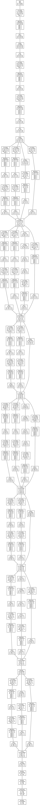
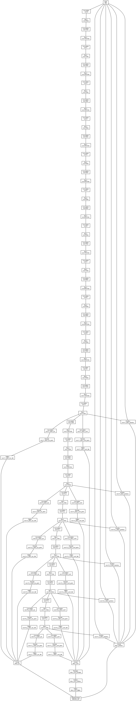

dnn network printout
an attempt to print out opencv's dnn network layers, using graphviz for visualization.maybe we can cut out a bit earlier ? how many output nodes are there ? let's see:
this will write a graph in the dot language, we can pipe it's output to the dot tool:
dnn_dot -m=openface.nn4.small2.v1.t7 -w=96 -h=96 -v=3 | dot -Tpng > g2.png
 
longgraphislong ;)